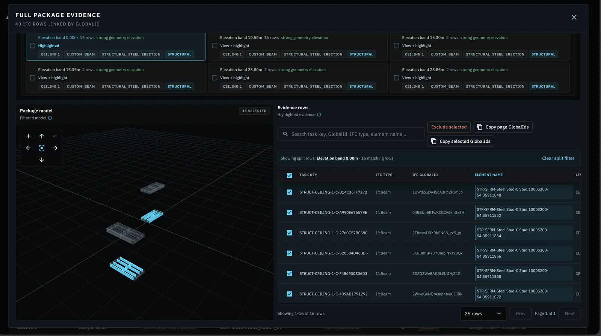

AROBOTIX reads the model, confirms readiness, sequences the work across crews and machines, and records what actually got built. Here is the gap it closes, and exactly how it works.
Buildings are modeled in millimeter detail before a single hole is dug. Then execution begins, and the industry falls back on phone calls, paper checklists, and memory. The cost of that gap is not abstract. It is measured every year.
Crews mobilize before predecessors are complete, materials are on site, or concrete has cured. Readiness is confirmed by phone calls and assumption. Every wrong assumption is a lost morning, and lost mornings compound into lost months.
What was done, when, by whom, and under what conditions lives in scattered photos, daily logs, and memory. When a defect or delay surfaces months later, reconstructing a defensible trail is slow, costly, and contested. Disputes fill the vacuum.
Owners pay for detailed digital models, then execution runs on 2D printouts and verbal instructions. The model describes what to build. Nothing translates it into verified, sequenced, trackable work.
Design software stops at documentation. Project management software tracks schedules and documents, not physical readiness or verified completion. Field crews are skilled and accountable, but the layer that should connect the plan to their work does not exist. Everyone operates on partial information, and proving what happened means reconstructing it after the fact. And as robots and automated machines arrive, every vendor coordinates its own silo, which widens the same gap.
AROBOTIX sits between the digital model and the job site. It reads the plan, confirms what is ready, sequences the work across crews and machines, and records what actually got built. It supports the people who run the site, and it leaves behind a defensible record so the plan and the field finally agree.

The BIM-to-Task Compiler turns the model into clear, structured, verifiable tasks, with readiness rules and dependencies built in. The plan becomes work the field can act on.
Before a crew or machine starts, AROBOTIX validates the physical and sequencing prerequisites. Work begins when the site is actually ready, not when someone hopes it is.
One neutral layer sequences tasks across crews, trades, and machines. Everyone sees the same plan, the same order, and the same status, in real time.
Every task leaves a confidence-tagged, time-stamped record. When a dispute surfaces, the answer is a lookup instead of a fight. That record is the Proof-of-Work.
The plans were already detailed. The crews were already capable. What was missing is the layer that turns the plan into coordinated, confirmed, and recorded work. That is the whole job AROBOTIX does, and nothing more.
Air-traffic control does not fly the planes. It makes sure every aircraft knows where to go, in what order, where the others are, and that every movement is on record. AROBOTIX does the same for sites that mix people, robots, machines, and automated systems.
Everyone on the site works from the same picture: what is ready, what comes next, and what is already done.
Ingests the digital construction model, the complete blueprint for the building.
Converts the complex model into specific, sequenced actions for humans or machines.
Before anything starts, confirms the right people, materials, and machines are in place.
People and machines do the work. AROBOTIX provides real-time context and sequencing.
Every completed task generates a verified, time-stamped Proof-of-Work record.
Insights from each project feed the next, improving coordination accuracy over time.
Human review and final accountability stay with the contractor at every step. AROBOTIX supports judgment, it does not replace it.